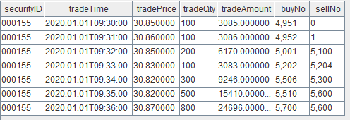
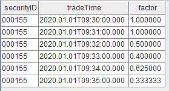
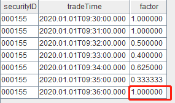
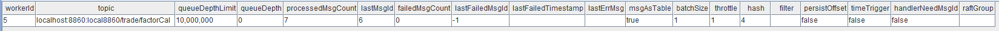

入门示例 02 ：实时计算过去 5 分钟主动成交量占比
计算目标
在量化交易中，因子计算是指根据一些预定义的规则或公式，从原始数据中提取出能够反映市场或个股特征的数值。本例中我们将以逐笔成交数据作为输入，对每一笔逐笔成交数据都响应一次，实时计算并输出过去 5 分钟主动成交量占比这一高频因子。
因子计算逻辑
主动成交占比即主动成交量占总成交量的比例，其计算公式如下：

其中 actVolumet 表示 t-window 时刻到 t 时刻区间内的主动成交量；totalVolumet 表示 t-window 时刻到 t 时刻区间的总成交量；指示函数 I 含义如下：
输入数据示例

动手实现
接下来我们会一步一步地在 DolphinDB 节点上模拟逐笔成交数据流和完成流式计算输出。完整脚本见附录。
创建作为输入的流数据表
首先创建一张共享流数据表 trade ，用于存储和发布逐笔成交数据：
share(table=streamTable(1:0, `securityID`tradeTime`tradePrice`tradeQty`tradeAmount`buyNo`sellNo, [SYMBOL,TIMESTAMP,DOUBLE,INT,DOUBLE,LONG,LONG]), sharedName=`trade)
执行以上语句后，节点内存中会有一张表 trade，暂时没有写入任何一条数据。
创建作为输出的流数据表
创建一张共享流数据表 resultTable，用于存储和发布因子计算结果：
share(table=streamTable(10000:0, ["securityID", "tradeTime", "factor"], [SYMBOL, TIMESTAMP, DOUBLE]), sharedName=`resultTable)
执行以上语句后，节点内存中会有一张表 resultTable，暂时没有写入任何一条数据，我们希望将之后的计算结果实时写入到表 resultTable 中。
订阅流数据表
def factorCalFunc(msg){
...
}
subscribeTable(tableName="trade", actionName="factorCal", offset=-1, handler=factorCalFunc, msgAsTable=true, batchSize=1, throttle=0.001)
前三行是一段伪代码，假设系统上定义有名为 factorCalFunc 的一元函数。执行第四行的
subscribeTable 函数，表示订阅流数据表 trade，并指定
factorCalFunc 为数据处理方法，并分配一个后台线程用于不断地处理订阅到的新数据。那么，每当表
trade 被插入一批数据时，数据都会被发布到订阅端，订阅端的后台线程会收到这部分新增的数据，并以此作为输入调用函数
factorCalFunc 。
-
tableName="trade" 表示订阅流数据表 trade
-
actionName="factorCal" 表示订阅任务的名称，用户自定义即可，同一个节点上 tableName 和 actionName 的组合必须唯一
-
offset=-1 表示从订阅之后表 trade 里新增的第一条数据开始消费
-
handler=factorCalFunc 表示对订阅到的数据的处理方式
-
msgAsTable=true 表示待处理的订阅到的数据是表，也就是这里
factorCalFunc函数的入参 msg 是表 -
batchSize=1 和 throttle=0.001 共同指定了后台线程处理的频率，本例中的频率为任意有一条或多条待处理数据即调用一次处理函数
factorCalFunc
那么，接下来的问题是如何实现因子计算函数 factorCalFunc，来计算每支股票过去 5
分钟的总成交量以及主动成交量，进而得出主动成交量占比因子。
使用流计算引擎定义计算逻辑
我们从 factorCalFunc 函数的一个错误实现讲起：
def factorCalFunc(msg){
tmp = select securityID, tradeTime, tmsum(tradeTime, iif(buyNo>sellNo, tradeQty, 0), 5m)\tmsum(tradeTime, tradeQty, 5m) as factor from msg context by securityID
objByName("resultTable").append!(tmp)
}
subscribeTable(tableName="trade", actionName="factorCal", offset=-1, handler=factorCalFunc, msgAsTable=true, batchSize=1, throttle=0.001)
-
msg 可以看做一个与* trade* 表结构相同的内存表
-
objByName("resultTable").append!(tmp) 表示往结果表 resultTable 插入 tmp 表
-
tmp 表通过 DolphinDB SQL 批计算得到：
-
context by 是 DolphinDB 独有的功能，与 group by 类似，都对数据进行分组。不同的是，使用 context by 对表 msg 分组后，返回的结果 tmp 的行数与 msg 一致。此外， context by 可以和时间序列函数（如此处的
tmsum）一起使用，表示在 securityID 分组内按记录的顺序逐行做滑动时间窗口聚合 -
tmsum(tradeTime, tradeQty, 5m)表示以 tradeTime 列为时间列，对每一行记录往前划定过去 5 分钟窗口，对窗口内所有记录的 tradeQty 求和，即过去五分钟的总成交量 -
tmsum(tradeTime, iif(buyNo>sellNo, tradeQty, 0), 5m)表示以 tradeTime 列为时间列，对每一行记录往前划定过去 5 分钟窗口，对窗口内buyNo>sellNo的这部分记录的 tradeQty 求和，即过去五分钟的主动成交量
-
为什么上述的 factorCalFunc函数是一个错误示例？
因为使用 subscribeTable 订阅之后每次调用 factorCalFunc 只输入新增的
trade 表记录，而主动成交量因子依赖历史的若干行记录，但是在 factorCalFunc
函数中并没有缓存和获取这部分历史记录，因此，订阅消费会因为没有考虑历史数据而输出错误的结果。我们手动构造数据并调用
factorCalFunc 函数看一下效果，首先构造一批数据调用一次
factorCalFunc 函数。
// 定义结果表 share(table=streamTable(10000:0, ["securityID", "tradeTime", "factor"], [SYMBOL, TIMESTAMP, DOUBLE]), sharedName=`resultTable) // 构造输入数据 input1 = table(1:0, `securityID`tradeTime`tradePrice`tradeQty`tradeAmount`buyNo`sellNo, [SYMBOL,TIMESTAMP,DOUBLE,INT,DOUBLE,LONG,LONG]) insert into input1 values(`000155, 2020.01.01T09:30:00.000, 30.85, 100, 3085, 4951, 0) insert into input1 values(`000155, 2020.01.01T09:31:00.000, 30.86, 100, 3086, 4952, 1) insert into input1 values(`000155, 2020.01.01T09:32:00.000, 30.85, 200, 6170, 5001, 5100) insert into input1 values(`000155, 2020.01.01T09:33:00.000, 30.83, 100, 3083, 5202, 5204) insert into input1 values(`000155, 2020.01.01T09:34:00.000, 30.82, 300, 9246, 5506, 5300) insert into input1 values(`000155, 2020.01.01T09:35:00.000, 30.82, 500, 15410, 5510, 5600) insert into input1 values(`000155, 2020.01.01T09:36:00.000, 30.87, 800, 24696, 5700, 5600) // 调用一次 factorCalFunc 函数 factorCalFunc(msg=input1)
执行下述语句查询结果表：
select * from resultTable
返回结果如下，目前看起来一切正常：

我们再构造 1 条数据，再调用一次 factorCalFunc 函数：
// 构造输入数据 input2 = table(1:0, `securityID`tradeTime`tradePrice`tradeQty`tradeAmount`buyNo`sellNo, [SYMBOL,TIMESTAMP,DOUBLE,INT,DOUBLE,LONG,LONG]) insert into input2 values(`000155, 2020.01.01T09:36:00.000, 30.87, 800, 24696, 5700, 5600) // 再调用一次 factorCalFunc 函数 factorCalFunc(msg=input2)
结果表如下，最后一行对应新增的这条 input2 数据的结果，factor 值明显错误：

如何实现正确的 factorCalFunc函数？
流式处理中不断地处理增量数据，类似主动成交量因子这样的计算我们称为有状态计算，有状态计算需要用到历史的输入数据或者中间结果，我们可以在上文的
factorCalFunc 函数的基础上进行复杂的改写以获取历史数据。但是，在 DolphinDB
中提供了更容易的实现方式——DolphinDB流计算引擎，
流计算引擎可以视作封装的独立计算黑盒，通过向其写入数据触发计算，并将计算结果输出到目标表，引擎内部缓存了需要用的历史数据或中间结果（也称为状态）。流计算引擎详细介绍见内置流式计算引擎 。
针对不同的场景有不同的流计算引擎，本例需要逐条分组响应计算并输出，所以应该用响应式状态引擎实现：
createReactiveStateEngine(name="reactiveDemo", metrics=<[tradeTime, tmsum(tradeTime, iif(buyNo>sellNo, tradeQty, 0), 5m)\tmsum(tradeTime, tradeQty, 5m)]>, dummyTable=trade, outputTable=resultTable, keyColumn="securityID") def factorCalFunc(msg){ getStreamEngine("reactiveDemo").append!(msg) } subscribeTable(tableName="trade", actionName="factorCal", offset=-1, handler=factorCalFunc, msgAsTable=true, batchSize=1, throttle=0.001)
-
使用
createReactiveStateEngine函数定义一个响应式状态引擎：-
引擎需要一个在节点上唯一的名字，此处为 reactiveDemo
-
dummyTable=trade 表示引擎的输入表结构与表 trade 一致
-
outputTable=resultTable 表示计算结果输出到结果表 resultTable
-
keyColumn="securityID" 表示按 securityID 分组计算，分组列会是引擎输出结果的第一列
-
metrics 定义了因子计算的逻辑，tradeTime 表示输出一列等于原始输入的 tradeTime 列，
tmsum(tradeTime, iif(buyNo>sellNo, tradeQty, 0), 5m)\tmsum(tradeTime, tradeQty, 5m)表示输出一列计算得到的主动成交量占比
-
-
定义
factorCalFunc函数，函数内往引擎注入数据。 -
tmsum在响应式状态引擎中的含义与上文 SQL 语句中的业务含义一致，但是系统内部的实现会有不同，tmsum在引擎内是基于上一条计算结果增量计算实现的，为此，引擎内会缓存必要的计算状态。以上文的输入为例，09:36:00.000 这条记录的过去 5 分钟的总成交量 = 上一条记录的过去5分钟总成交量 +09:36:00.000 当前这条记录的成交量-包含在上一条记录的过去 5 分钟窗口中但不包含在当前记录的过去5分钟窗口内的成交量。
此外，subscribeTable 函数的 handler
参数也可以直接指定为数据表，而不一定必须是一元函数。getStreamEngine("reactiveDemo")
会返回流计算引擎的句柄，同样是一个数据表，所以可以直接将 handler 指定为引擎句柄，上述脚本可以简化为：
createReactiveStateEngine(name="reactiveDemo", metrics=<[tradeTime, tmsum(tradeTime, iif(buyNo>sellNo, tradeQty, 0), 5m)\tmsum(tradeTime, tradeQty, 5m)]>, dummyTable=trade, outputTable=resultTable, keyColumn="securityID") subscribeTable(tableName="trade", actionName="factorCal", offset=-1, handler=getStreamEngine("reactiveDemo"), msgAsTable=true, batchSize=1, throttle=0.001)
模拟数据输入
那么，完整的流计算任务定义脚本如下：
// 创建作为输入的流数据表 share(table=streamTable(1:0, `securityID`tradeTime`tradePrice`tradeQty`tradeAmount`buyNo`sellNo, [SYMBOL,TIMESTAMP,DOUBLE,INT,DOUBLE,LONG,LONG]), sharedName=`trade) // 创建作为输出的流数据表 share(table=streamTable(10000:0, ["securityID", "tradeTime", "factor"], [SYMBOL, TIMESTAMP, DOUBLE]), sharedName=`resultTable) // 定义处理函数 createReactiveStateEngine(name="reactiveDemo", metrics=<[tradeTime, tmsum(tradeTime, iif(buyNo>sellNo, tradeQty, 0), 5m)\tmsum(tradeTime, tradeQty, 5m)]>, dummyTable=trade, outputTable=resultTable, keyColumn="securityID") // 订阅流数据表 subscribeTable(tableName="trade", actionName="factorCal", offset=-1, handler=getStreamEngine("reactiveDemo"), msgAsTable=true, batchSize=1, throttle=0.001)
执行上述脚本后，我们提交了对流数据表 trade 的订阅，并指定使用响应式状态引擎来处理收到的订阅数据。接下来，我们往流数据表里注入一些数据来观察订阅消费的效果。
insert into trade values(`000155, 2020.01.01T09:30:00.000, 30.85, 100, 3085, 4951, 0) insert into trade values(`000155, 2020.01.01T09:31:00.000, 30.86, 100, 3086, 4952, 1) insert into trade values(`000155, 2020.01.01T09:32:00.000, 30.85, 200, 6170, 5001, 5100) insert into trade values(`000155, 2020.01.01T09:33:00.000, 30.83, 100, 3083, 5202, 5204) insert into trade values(`000155, 2020.01.01T09:34:00.000, 30.82, 300, 9246, 5506, 5300) insert into trade values(`000155, 2020.01.01T09:35:00.000, 30.82, 500, 15410, 5510, 5600)
插入若干条数据到表 trade 后，查看结果表 resultTable：

以上结果符合预期，我们再插入一条数据：
insert into trade values(`000155, 2020.01.01T09:36:00.000, 30.87, 800, 24696, 5700, 5600)
结果表对应地新增了一条记录，这一次，对于09:36:00这条记录我们得到了正确的 factor 值：

至此，我们通过发布订阅框架以及流计算引擎完成了一个流计算任务的开发，不断地往流数据表 trade 中插入数据将会不断地触发计算并输出因子到结果表。
进行运维
流计算运维
消息处理线程为后台线程，流计算引擎里有内部状态，因此，系统提供了流计算运维函数来查看流计算的执行情况。除了使用函数查询外，在 2.00.11 及以上版本中也可以在 web 界面的流计算监控模块中直接查看。
-
查看流订阅消费的状态：
getStreamingStat().subWorkers
执行以上代码后可以看到，节点上目前有一个订阅线程在工作，该订阅已经处理了 7 条消息，目前没有报错。订阅消费队列的最大深度为 1000 万，目前队列里没有待处理的数据。

-
查看流计算引擎的状态：
getStreamEngineStat().ReactiveStreamEngine
执行以上代码后可以看到，目前插入引擎的输入数据中，只有一个分组（即 000155），共输入了 7 条数据，引擎内部维护的状态占用了 1836 字节。

流计算环境清理
当流计算任务运行一段时间后，或许我们需要下线计算任务、更改计算逻辑或者修改输入源的表结构，那么我们可能需要将订阅、引擎或者流数据表分别取消掉，可以使用以下系统函数。
-
取消订阅：
unsubscribeTable(tableName="trade", actionName="factorCal")
执行以上代码可以取消特定的订阅关系，之后表 trade 再发布数据，系统也不会计算主动成交量因子。
-
释放流计算引擎：
dropStreamEngine(`reactiveDemo)
执行以上脚本可以释放流计算引擎
reactiveDemo，引擎占用的内存也会一起释放。 -
删除流数据表：
dropStreamTable(`trade)
附录
完整脚本
// 创建作为输入的流数据表 share(table=streamTable(1:0, `securityID`tradeTime`tradePrice`tradeQty`tradeAmount`buyNo`sellNo, [SYMBOL,TIMESTAMP,DOUBLE,INT,DOUBLE,LONG,LONG]), sharedName=`trade) // 创建作为输出的流数据表 share(table=streamTable(10000:0, ["securityID", "tradeTime", "factor"], [SYMBOL, TIMESTAMP, DOUBLE]), sharedName=`resultTable) go // 定义处理函数 createReactiveStateEngine(name="reactiveDemo", metrics=<[tradeTime, tmsum(tradeTime, iif(buyNo>sellNo, tradeQty, 0), 5m)\tmsum(tradeTime, tradeQty, 5m)]>, dummyTable=trade, outputTable=resultTable, keyColumn="securityID") // 订阅流数据表 subscribeTable(tableName="trade", actionName="factorCal", offset=-1, handler=getStreamEngine("reactiveDemo"), msgAsTable=true, batchSize=1, throttle=0.001) go // 模拟数据输入 insert into trade values(`000155, 2020.01.01T09:30:00.000, 30.85, 100, 3085, 4951, 0) insert into trade values(`000155, 2020.01.01T09:31:00.000, 30.86, 100, 3086, 4952, 1) insert into trade values(`000155, 2020.01.01T09:32:00.000, 30.85, 200, 6170, 5001, 5100) insert into trade values(`000155, 2020.01.01T09:33:00.000, 30.83, 100, 3083, 5202, 5204) insert into trade values(`000155, 2020.01.01T09:34:00.000, 30.82, 300, 9246, 5506, 5300) insert into trade values(`000155, 2020.01.01T09:35:00.000, 30.82, 500, 15410, 5510, 5600) insert into trade values(`000155, 2020.01.01T09:36:00.000, 30.87, 800, 24696, 5700, 5600)